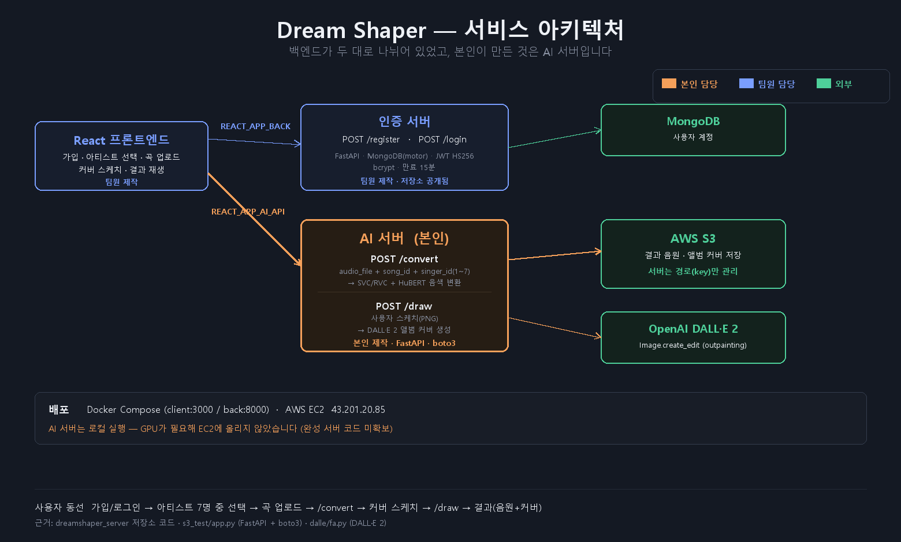
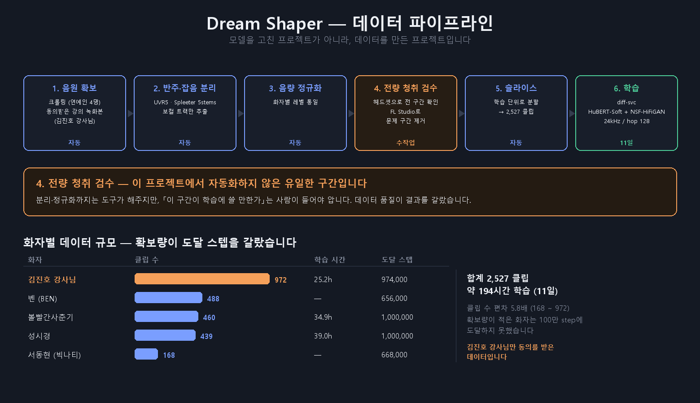
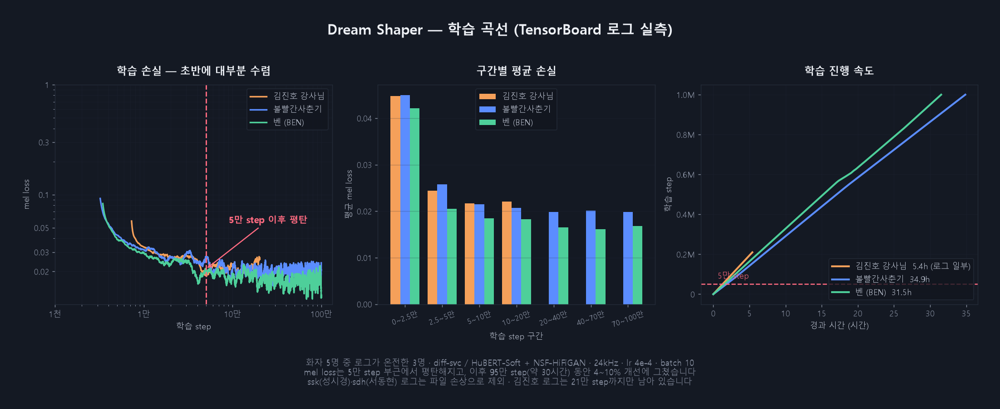
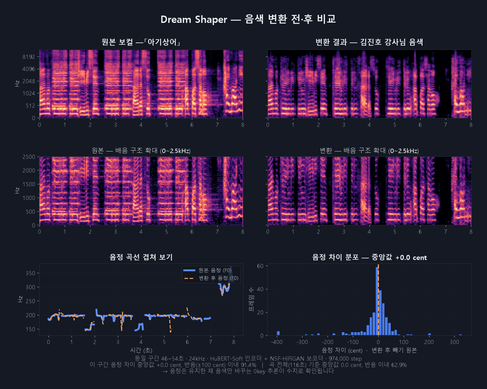
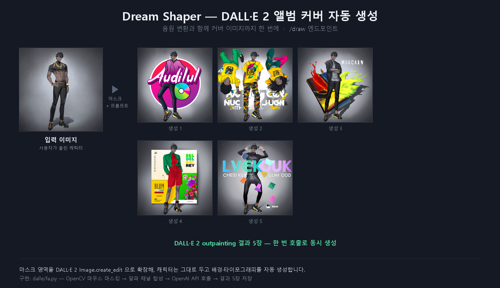
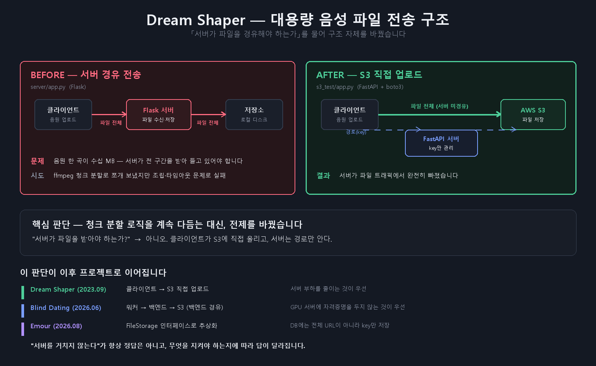

원하는 아티스트의 목소리로 노래를 커버하고, DALL·E 2로 앨범 커버까지 만들어 주는 서비스입니다. 백엔드 인력 이탈로 남은 2주 안에 AI 서버를 직접 구축해야 했던 프로젝트입니다.
사용자가 곡을 올리고 아티스트를 고르면, 그 목소리로 변환된 커버를 돌려줍니다. 여기에 간단한 스케치를 그리면 DALL·E 2가 앨범 커버를 만들어 주는 기능을 붙였습니다.
가입/로그인 → 아티스트 선택 → 곡 업로드 → /convert (음성 변환)
→ 커버 스케치 → /draw (앨범 커버)
→ 결과 화면 (음원 + 커버)
| 구성요소 | 담당 |
|---|---|
| AI 서버 — 음성 변환 · 앨범 커버 · S3 연동 | 본인 |
| 인증 서버 — 회원가입 · 로그인 | 팀원 |
| React 프론트엔드 · Docker Compose · EC2 배포 | 팀원 |
원래 백엔드 담당이 아니었고, 백엔드 인력 이탈로 급하게 서버를 만들어야 하는 상황이었습니다.
| 이유 | |
|---|---|
| Python 생태계 | 추론 코드가 이미 Python — 모델을 서버에 붙이는 비용이 가장 낮았습니다 |
| 학습 곡선 | 남은 일정이 2주 남짓이라 빠르게 익힐 수 있는 것이 중요했습니다 |
| 자동 문서화 | 프론트엔드와 API 스펙을 맞춰야 했는데 문서를 따로 쓸 시간이 없었습니다 |

| 화자 | 클립 수 | 학습 시간 | 도달 스텝 |
|---|---|---|---|
| A | 972 | 25.2h | 974,000 |
| B | 488 | — | 656,000 |
| C | 460 | 34.9h | 1,000,000 |
| D | 439 | 39.0h | 1,000,000 |
| E | 168 | — | 668,000 |
| 합계 | 2,527 | 약 194h |
클립 수 편차가 5.8배(168 ~ 972)입니다. 확보량이 적은 화자는 100만 step에 도달하지 못했습니다 — 결과를 바꾼 것은 모델이 아니라 데이터였습니다.
화자 이름은 밝히지 않습니다. 실존 인물이고 학습 데이터가 크롤링이기 때문입니다.
| 항목 | 값 | 비고 |
|---|---|---|
| 인코더 | HuBERT-Soft | 공개 사전학습 |
| 보코더 | NSF-HiFiGAN | 공개 사전학습 |
| 샘플레이트 / hop | 24kHz / 128 | 기본 512 → 촘촘하게 |
| Diffusion | timesteps 1000 · WaveNet 20층 × 256채널 | 기본 384 → 축소 |
| f0 | 50 ~ 1100Hz · parselmouth | |
| 학습률 / 배치 | 4e-4 / 10 · AMP | |
| 추론 | 0key (키 이동 없음) · pndm_speedup 20x | diffusion 1000스텝을 20배 가속 |
hop_size 를 낮춰 시간 해상도를 올리고, residual_channels 를 줄여 모델 폭을 낮춘 조합입니다.
같은 VRAM에서 가창의 음정 변화를 더 촘촘히 잡으려는 설정입니다.

tr/mel 을 구간별로 평균한 값 · 클릭하면 원본 크기로 열립니다| 구간 | 평균 mel loss |
|---|---|
| 0 ~ 2.5만 step | 0.0450 |
| 2.5 ~ 5만 | 0.0258 |
| 5 ~ 10만 | 0.0214 |
| 10 ~ 20만 | 0.0207 |
| 70 ~ 100만 | 0.0199 |
5만 step 부근에서 사실상 평탄해집니다. 이후 95만 step(약 30시간)을 더 돌렸지만 손실은 4~10% 개선에 그쳤습니다.
원본 diff-svc 와 작업 폴더를 파일 단위로 비교한 결과,
바뀐 것은 training/config.yaml · infer.py · inference.ipynb 뿐이었습니다.

| 측정 | 값 | 의미 |
|---|---|---|
| 음정 차이 중앙값 | +0.0 cent | 0key 설정(키를 옮기지 않음)과 정확히 일치 |
| 반음 이내 — 8초 구간 | 91.4% | 구간과 곡 전체를 나눠 제시합니다. 전체 수치가 낮은 것은 무성 구간이 포함되기 때문입니다 |
| 반음 이내 — 곡 전체 116초 | 62.9% | |
| 에너지 포락선 상관 | 0.781 | 원곡의 강약 흐름이 유지됨 |


음원 한 곡이 수십 MB인데 Flask 서버가 전 구간을 받아 들고 있어야 했습니다. ffmpeg 청크 분할로 쪼개 보냈지만 조립·타임아웃 문제로 실패했습니다.
@app.post("/upload/")
async def upload_image(file: UploadFile):
s3_key = f"uploads/{file.filename}"
s3.upload_fileobj(file.file, AWS_BUCKET_NAME, s3_key)
image_url = f"https://{AWS_BUCKET_NAME}.s3.amazonaws.com/{s3_key}"
return {"file_name": file.filename, "image_url": image_url}다만 이 답이 항상 옳지는 않았습니다. 3년 뒤 Blind Dating에서는 반대로 백엔드를 경유하게 했습니다. GPU 서버에 자격증명을 두지 않는 것이 서버 부하보다 중요했기 때문입니다. 같은 문제, 다른 답 →
| 한계 | 내용 |
|---|---|
| 완성 서버 코드 미확보 | /convert·/draw 를 하나로 묶은 완성본을 찾지 못했습니다.
구성요소 코드(S3 업로드 · DALL·E 생성 · 폐기된 서버 경유 버전)는 모두 남아 있지만,
엔드포인트 개수·BackgroundTasks 사용 여부 등 구현 세부는 주장하지 않습니다 |
| 가중치 미공개 | 학습된 화자 모델은 실존 인물의 음색이라 배포하지 않습니다. 2022년 부정경쟁방지법 개정으로 음성도 보호 대상에 포함됩니다 |
| 조기 종료 미적용 | 손실이 평탄해진 뒤에도 95만 step을 더 돌렸습니다. 검증 손실 기반 조기 종료를 걸었어야 했습니다 |
| AI 서버 로컬 실행 | GPU가 필요해 EC2에 올리지 않았습니다. 프론트·인증 서버만 Docker Compose로 EC2 배포 |
diff-svc 아키텍처는 손대지 않았고, 화자별 결과 차이는 전부 확보한 데이터의 양과 품질에서 나왔습니다. 클립 수가 5.8배 차이 나는 화자들의 결과가 그대로 그 차이를 반영했습니다.
"백엔드를 전담했다"는 표현은 인증 서버를 만든 팀원의 몫을 가져오는 말이 됩니다. "AI 서버를 직접 구축했다" 가 사실이고, 전문성도 그쪽이 더 잘 드러납니다.